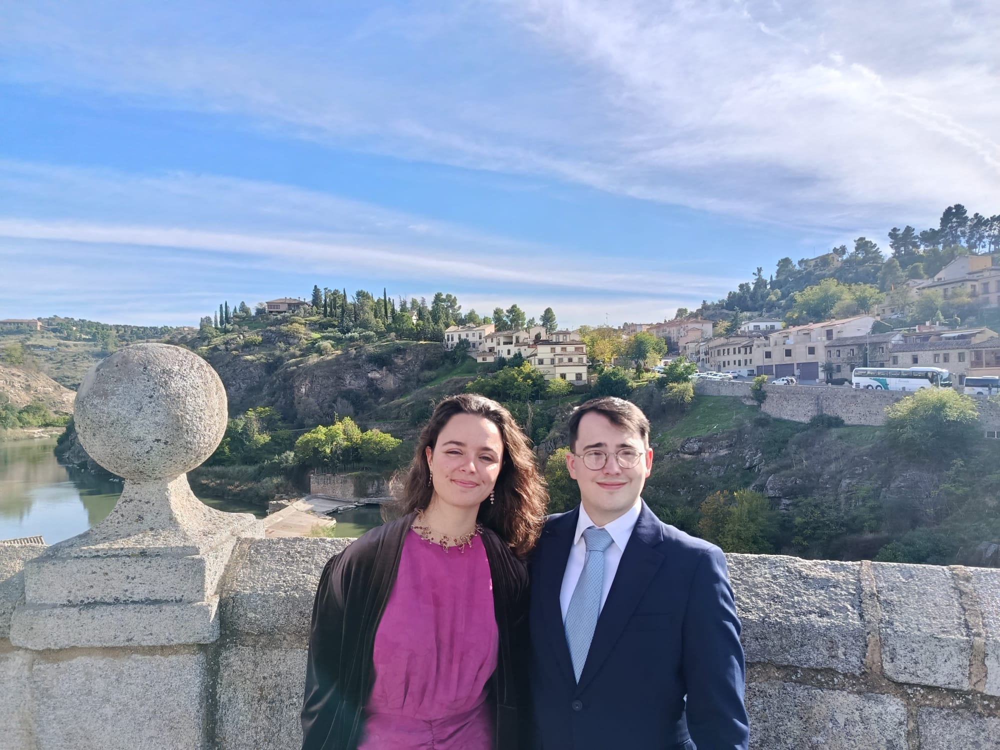

Please respond by 1st November 2027.Por favor, confirmad antes del 1 de noviembre de 2027.
Note: information about the wedding is below this Google Form. Please keep scrolling after you RSVP!
Nota: la información sobre la boda está debajo de este formulario de Google. ¡Por favor, seguid bajando después de confirmar!
Trouble seeing the form? Open it in a new tab¿No ves el formulario? Ábrelo en una nueva pestaña


A few things worth knowing, in the order they'll happen.
Our ceremony is a Catholic mass, held in a mix of Spanish and English.
After the mass, it's a short walk (2 min) up Calle de Alcalá to the Gran Casino de Madrid. The cocktail lasts one hour before we sit down to eat.
After the cocktail we'll all sit down for a long Spanish lunch, which we expect to finish around 18:00.
After the banquet we'll all move to the disco, where the party starts with a slow dance. Here's how it will go:
As soon as you see the fourth couple step onto the floor, we'd love every couple to join in, so we can all share a short, big slow dance before the party begins. No experience needed! The sooner the first few couples join, the more everyone else will follow, and the more we are, the less anyone will notice no-one knows how to slow dance!
The ceremony starts promptly at 12:30. We strongly recommend arriving 30 minutes beforehand, so that everyone can find their seat without rushing. The church doors will open at 12:00 and will close at the start of the ceremony to avoid interruptions.
Formal. Please see full details below.
We're only able to accommodate guests named on your invitation, so please check your invitation for any plus-one.
Yes, the reception at the Gran Casino de Madrid will be entirely indoors, and a cloakroom will be available for coats and bags.
Sí, la recepción en el Gran Casino de Madrid será completamente en interior, y habrá guardarropa disponible para abrigos y bolsos.
We won't be providing transport, but both venues are very central and easy to reach by public transport. The Sevilla metro stop (Line 2) sits right alongside the church, and the Gran Casino de Madrid is just a short walk from there. Ubers and taxis are readily available across the city.
No habrá transporte organizado, pero ambos lugares son muy céntricos y de fácil acceso en transporte público. La parada de Sevilla (Línea 2) está justo al lado de la iglesia, y el Gran Casino de Madrid está a un breve paseo.
La fiesta seguirá en una disco cercana!
The best wedding gift you can give us is coming to celebrate our love with us.
But, if you'd also like to help us start our new life together, here are our details:
El mejor regalo de boda que nos podéis hacer es venir a celebrar nuestro amor con nosotros.
Pero, si también queréis ayudarnos a empezar nuestra nueva vida juntos, aquí tenéis nuestros datos:
Iglesia de la Concepción Real de Calatrava (Las Calatravas)
Calle de Alcalá, 25, 28014 Madrid
Begins at 12:30. Doors open at 12:00 and close at the start of the ceremony. Please make sure tobe there at least 20 minutes before! Daf will be happy to greet you!
Comienza a las 12:30. Las puertas abren a las 12:00 y se cierran al empezar la ceremonia.
Gran Casino de Madrid
Calle de Alcalá, 15, 28014 Madrid
Reception to follow the ceremony, entirely indoors, with a cloakroom available. The cocktail, banquet and party all take place at the Casino, and the reception ends at 22:00. See On the Day for what to expect.
La recepción comenzará a continuación de la ceremonia, será en interior, y habrá guardarropa disponible. El cóctel, el banquete y la fiesta serán en el Gran Casino de Madrid, y la recepción termina a las 22:00. Más detalles próximamente.
We won't be arranging transport or accommodation, but everything is centrally located and easy to reach by metro or bus. The Sevilla stop (Line 2) sits right alongside the church. If you're travelling from abroad, Madrid's airport is Adolfo Suárez Madrid–Barajas (MAD).
No organizaremos transporte, ya que la celebración es en pleno centro de Madrid. La parada de Sevilla (Línea 2) está justo al lado de la iglesia.
Good to know: our wedding weekend falls on a long holiday weekend in Spain: Monday 6th December (Día de la Constitución) and Wednesday 8th December (La Inmaculada) are both national public holidays. We'd really recommend booking your flights and accommodation well in advance, as prices may spike over this popular travel period.
Un aviso: nuestro fin de semana de boda coincide con el puente de diciembre.
There are plenty of hotels and Airbnbs throughout the city to suit every budget and location.
Spain has quite strict wedding etiquette regarding attire, so please do your best to follow it, as it's a cultural practice we'd love for you to be part of. This is a religious ceremony, so please dress accordingly.
Ladies: a floor-length or midi dress with appropriate coverage for the church, paired with formal dress shoes. Sleeves are recommended.
Men: a suit or kilt, tie or bowtie, and dress shoes are mandatory.
Headpieces: as it's a daytime wedding, we'd love to see lots of lovely headpieces! We highly recommend [EDIT: shop name + link] in the centre of Madrid. It's an underground that is slightly difficult to access, but it's cheap, and you can pop in the day before and pick one on the spot to match your outfit. Headpieces can be worn in church and come off after the cocktail.
Weather: Madrid in December is chilly, with daytime temperatures around 4–12°C. Most of the day will be spent indoors, but we recommend bringing a coat. You will be able to leave it in the venues cloakroom.
España tiene una etiqueta de boda bastante estricta respecto a la vestimenta, así que os pedimos que la sigáis lo mejor posible, ya que es una práctica cultural de la que nos encantaría que formarais parte. Al tratarse de una ceremonia religiosa, os pedimos vestir acorde a ella.
Señoras: vestido largo y con cobertura adecuada para la iglesia.
Caballeros: traje, corbata y zapatos de vestir son obligatorios.
Clima: Madrid en diciembre es frío, con temperaturas diurnas de entre 4 y 12°C. La mayor parte del día será en interior, pero recomendamos traer un abrigo.